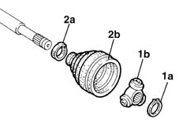
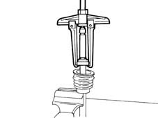
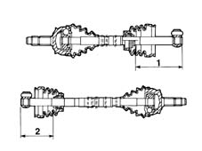
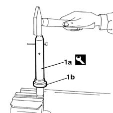
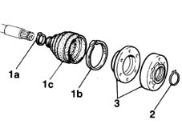

2710A24 differential end constant velocity joint (one) l/h or r/h - r + r with drive shaft removed - includes boot replacement
- Path
- Procedures > 27 AXLE > 2710 FRONT AXLE > 2710A drive shafts and joints > 2710A24 differential end constant velocity joint (one) l/h or r/h - r + r with drive shaft removed - includes boot replacement
- Kind
- repair procedure (removal / refitting; the operation number is the code)
- Applies to
- all engines; all production periods
- Interactive page
- https://sloeber94.github.io/elrnDB-fMltpl/en/#/2891562
Applies to: engines: 1.6 16v; all production periods
 Removing
Removing
 Refitting
RefittingPlace the drive shaft in a vice.
1. Remove the circlip (1a) and withdraw the tripod joint from the drive shaft (1b).
2. Remove the clip (2a) and remove the gaiter (2b).

Applies to: engines: 1.6 16v; all production periods
1. If necessary, remove the fluid-tight bearing from the drive shaft, using the universal puller.

Applies to: engines: 1.6 16v; all production periods
Refitting
RemovingFit the new protective gaiter on the drive shaft.
1. If the left fluid-tight bearing has been removed, it must be refitted in accordance with the specified dimensions.
Dimension for fitting left drive shaft fluid-tight roller bearing.
 | Measurement | Value | |
|---|---|---|---|
1 | Fitting of left driveshaft roller bearing (mm) | 143.8 |
Dimension for fitting left drive shaft ball bearing.
| Measurement | Value | |
|---|---|---|---|
1 | Fitting of left driveshaft ball bearing (mm) | 142.7 |
2. If the right fluid-tight bearing has been removed, it must be refitted in accordance with the specified dimensions.
Dimension for fitting right drive shaft fluid-tight roller bearing.
| Measurement | Value | |
|---|---|---|---|
2 | Fitting of right driveshaft roller bearing (mm) | 108.8 |
Dimension for fitting right drive shaft ball bearing.
| Measurement | Value | |
|---|---|---|---|
2 | Fitting of right driveshaft ball bearing (mm) | 107.7 |

Applies to: engines: 1.6 16v; all production periods
1. Using the tool (1a), fit the fluid-tight bearing (1b) on the drive shaft in accordance with the above dimensions.
 | Name | Country |
|---|---|---|
1a | Drift | 1.870.448.000 |

Applies to: engines: 1.6 16v; all production periods
Check that the drive shaft is not deformed or out of true in the area where the joint fits, and that the area in contact with the seal is not worn.
Fit the tripod joint on the drive shaft.
Fill the protective gaiter and bearing with TUTELA MRM2 grease.
Applies to: engines: 1.9 JTD 8V; all production periods
Removing
Refitting1. Remove the two clips (1a) and (1b) securing the protective gaiter (1c).
2. Clean the grease off the inside of the constant velocity joint and remove the circlip from its seating.
3. Withdraw the joint from the drive shaft and then remove the protective gaiter.

Applies to: engines: 1.9 JTD 8V; all production periods
Refitting
RemovingWash the joint thoroughly using diesel or petrol, and visually check that there are no signs of seiaure or scoring on the balls and their seats.
Fit the new protective gaiter.
Fit the joint on the drive shaft and secure it with a new circlip.
Fill the gaiter and joint with specific TUTELA MR2 grease.
Secure the protective gaiter using new clips.